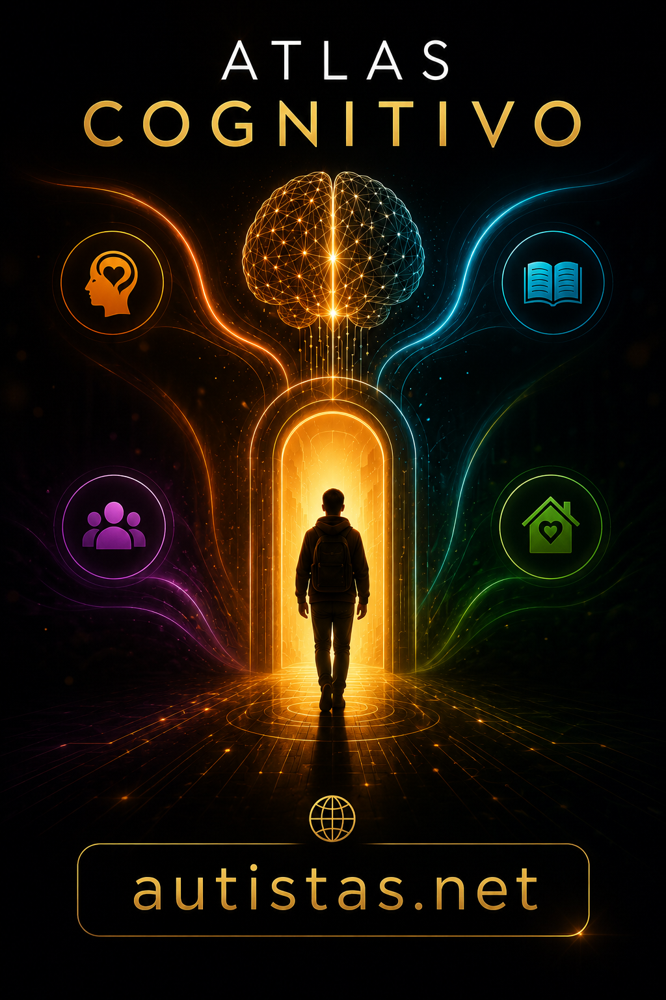

Um ecossistema construído por pessoas que acreditam que desenvolvimento humano, autonomia e propósito podem caminhar juntos.

Uma ideia vira conteúdo. O conteúdo vira conhecimento. O conhecimento gera autonomia. A autonomia transforma vidas.
Toda pessoa fortalece o ecossistema de uma forma diferente.
Compartilha conteúdos e amplia nosso alcance.
Sugere temas, pesquisas e referências.
Ajuda a construir livros, artigos e materiais.
Apresenta parceiros e oportunidades.
Compartilha experiência e conhecimento.
Engaja pessoas e fortalece campanhas.
Pequenas ações geram grandes impactos.
Ajude a ampliar o alcance do canal.
Contribua para os próximos conteúdos.
Conecte novas possibilidades.
E talvez a próxima seja você.